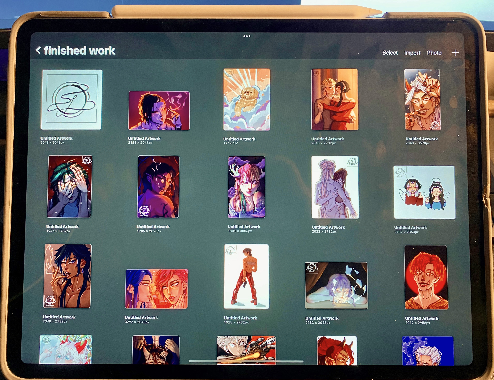

My Work
Click here for pictures of my work!

I do all of my drawings on the software, Procreate. I use my iPad Pro and stylus pen.

I use my iPad Pro and stylus pen. I like to draw things I like. Primarily, I draw people from my life and characters from games and anime. I also make art for people. For example, I made art of my cousin’s dogs for her son’s nursery.